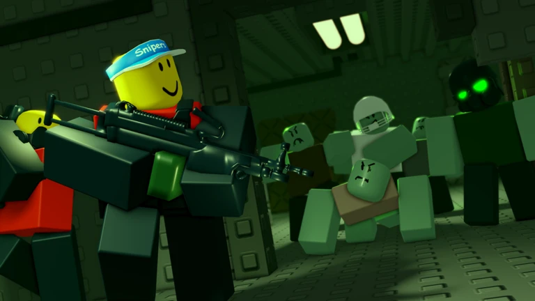
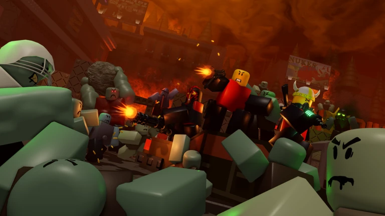
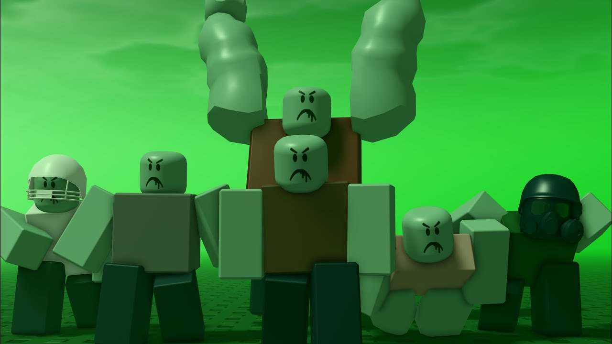

Hello! Welcome to my website where I talk about
my Top 5 Favorite Roblox Games!

The Undead Coming is originally made by Stealth Pilot(formerly known as ScorpioPilot) back in 2007,
now remade by a group of developes that are known as "4by2studs".
In this game, players are given an option whether to play as a Survivor OR as a Zombie.

I have a little bit of bias towards playing as a Survivor, because you get to
choose a specific loadout from an arsenal of guns. You must survive for 6 minutes
before winning the round. Do anything you can to survive such as sticking with other survivors,
mowing down a horde of zombies with your powerful guns, helping other survivors whenever they're low in health
or leave all of your fellow survivors to survive on your own somewhere else.

Upon picking the Zombie side, you are given 6 minutes to defeat every
survivor in the round. You start off as a weak zombie that deals puny damage
against the survivors and you are also very fragile. But the more that the round progresses,
the more access you can gain to playing as special infecteds.
Special Infecteds are Zombies that have unique abilities like spitting balls of acid,
charging and even exploding next to survivors.
The strongest Special Infected is the TANK
The Tank is capable of withstanding a lot of damage from survivors and is
able to smack survivors hard.
Overall, this game is a fun round survival that tests your thinking skills
about running or engaging to a fight.